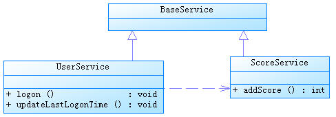

Spring是当前最主流的企业应用框架。 Spring解决企业级开发的复杂性问题，利用简单的JavaBean完成之前EJB所完成的工作。 简单来说，Spring是一个轻量级的控制反转（IOC）和面向且面编程（AOP）的框架。是每一个Java程序员必须学得的框架。
Spring作为最流行的开发框架，是Java开发最重要的框架之一，如何使用Spring作为Java开发者的首要任务。
在我们所开发的Openstack Base的工程中，利用Spring的诸多特性。 包括：AOP, Security, JavaBean, context, orm, mvc, oauth, etc.
Spring框架可以帮程序员快速搭建服务框架。
控制反转（IOC）就是由容器控制程序之间的依赖（调用）关系，传统是由程序自己控制的。 就像设计模式中的模板方式和好莱坞原则：Don’t call us, we will call you.
依赖注入（DI）更准确的描述了这种模式，组件之间的依赖关系由容器运行时决定，即由容器动态将依赖注入到组件之中。 例如UserRegister依赖于UserDao的实现类，UserRegister不关心USerDao的实现，由容器完成依赖。
声明bean工厂:
<bean id="sessionFactory" class="org.springframework.orm.hibernate4.LocalSessionFactoryBean">
将数据源dataSource注入进入SessionFactory:
<property name="dataSource" ref="dataSource" />
命名策略:
<property name="namingStrategy">
<bean class="org.hibernate.cfg.ImprovedNamingStrategy" />
</property>
<property name="hibernateProperties">
<props>
<prop key="hibernate.dialect">${hibernate.dialect}</prop>
<prop key="hibernate.show_sql">${hibernate.show_sql}</prop>
<prop key="hibernate.format_sql">true</prop>
<prop key="hibernate.generate_statistics">${hibernate.generate_statistics}</prop>
<prop key="hibernate.hbm2ddl.auto">${hibernate.hbm2ddl.auto}</prop>
</props>
</property>
Bean注入是Spring特色之一，进行解耦，激活Spring注解方式：自动扫描所有base-package包下的带有@Service，@Controller，@Component，@Repository的类。 注入bean:
<context:component-scan base-package="com.neunn.cloud.base.*" />
这里是整个扫描一个包进行全初始化，通过Spring的注解@AutoWired直接使用。 上述包中的所有bean类都会被自动初始化并注入到容器中，这里bean的要求是提供无参的构造函数以及相应的get和set方法。
启动Spring对@AspectJ注解的支持:
<aop:aspectj-autoproxy/>
@Resource应用在字段上的注入规则是首先用名字进行匹配，如果类型错误则报错；如果没有名字匹配则进行类型匹配，如果字段类型是接口并有多种实现匹配，则抛出异常。
@Resource应用在setter上的规则是使用属性名字进行匹配，如果类型错误则报错；如果没有名字匹配则进行属性参数类型匹配，如果参数类型是接口并有多种实现匹配，则抛出异常。
我们开发一个injectUserDAo接口，将一个UserDAO注入到该接口的实现类中，然后UserRegister实现该接口。如：
public interface InjectUserDao(){
public void setUserDao(UserDao userDao);
}
public class UserRegister implements InjectUserDao{
private UserDao userDao = null;
public void setUserDao(UserDao userDao){
this.userDao = userDao;
}
}
同时，我们需要配置框架，这样实现接口后便可完成依赖注入了：
<component>
<scope>request</scope>
<class>com.dev.spring.simple.MemoryUserDao</class>
<enabler>com.dev.spring.simple.InjectUserDao</enabler>
</component>
通过实现setter方法而进行依赖注入，是最常用的注入方式，方便易用，直接在配置文件中写入即可。
通过构造函数完成依赖注入，如：
public class UserRegister{
private UserDao userDao;
public UserRegister(UserDao userDao){
this.userDao = userDao;
}
}
在xk-web工程中，我们依赖一个异步操作日志工程log，同时xk-web依赖组织机构工程org，这个时候有个需求是在log中执行一个操作组织机构的方法， 但是为了避免互相依赖，我们在log工程中写一个空的回调接口，在web工程中实现，之后再将具体对象注入到log工程的运行中，这样就是我理解的依赖 倒置，如果相互依赖，耦合度将会不可避免的升高。
<bean id="propertyConfigurer"
class="org.springframework.beans.factory.config.PropertyPlaceholderConfigurer">
<property name="locations">
<list>
<value>classpath:jdbc.properties</value>
</list>
</property>
</bean>
<bean id="dataSource" class="org.apache.commons.dbcp.BasicDataSource"
destroy-method="close">
<property name="url" value="${jdbc.url}"/>
<property name="username" value="${jdbc.username}"/>
</bean>
或者：
<env-entry>
<env-entry-name>siteConfigHome</env-entry-name>
<env-entry-type>java.lang.String</env-entry-type>
<env-entry-value>/opt/ChConfigHome/</env-entry-value>
</env-entry>
Context initCtx = new InitialContext();
Context envCtx = (Context) initCtx.lookup("java:comp/env");
result = (String) envCtx.lookup("siteConfigHome");
或者：
<context-param>
<param-name>serverConfigLocation</param-name>
<param-value>WEB-INF/classes/config-server.properties</param-value>
</context-param>
servletConfig.getServletContext().getInitParameter("serverConfigLocation");
Spring在使用Hibernate的时候需要进行初始化配置，建立数据源:
<bean id="dataSource" class="com.alibaba.druid.pool.DruidDataSource">（这里使用阿里的数据库驱动）
之后进行数据库连接dataSource的各项配置：driverClassName, url(pay attention to encoding), username, password, initialSize, maxActive(最大活跃数), maxIdle(最大空闲值), minIdle(最小空闲值)。
Spring能自己管理数据连接池，但有时代码不小心也会出现连接泄漏的情况，这里碰到的问题时访问base层一段时间后出现卡在Obtaining JDBC Connection，之后超时连接错误。 目前的应对方法是在ApplicationContext.xml文件中加入如下配置:
<property name="removeAbandoned" value="true" />
<property name="removeAbandonedTimeout" value="${jdbc.removeAbandonedTimeout}" />
removeAbandoned在Spring中默认为false，即不移除遗弃的链接，这里我们设置为true，再设置超时时间为10,单位为秒，这样超过10s不进行新请求的链接将被释放回收，避免链接泄漏的情况发生。
目前的Spring 数据连接管理是自动建立和释放链接的，但是你需要使用jdbcTemplate或者使用SessionFactory.getCurrentSession()，其中，Session.getCurrentSession()是将Session绑定到Spring起的当前线程中，之后连接也就自然过度到Spring管理，自动释放； 但是如果使用SessionFactory.openSession()，是重新打开一链接，不与当前线程与事务绑定，这样如果你不手动close()的话，数据库连接就会泄漏。
如果使用jdbcTemplate，使用如下代码进行更新数据库：
@Autowired
private JdbcTemplate jdbcTemplate;
String sql = "UPDATE t_user u SET u.score = u.score + ? WHERE user_name =?";
jdbcTemplate.update(sql,toAdd,userName);
jdbcTemplate.execute("INSERT INTO t_user(user_name,password,score) VALUES('tom','123456',10)");
spring jdbc将我们原来的使用的statement等语句都封装进去，简单易用。
public <T> T query(PreparedStatementCreator psc, final PreparedStatementSetter pss, final ResultSetExtractor<T> rse) throws DataAccessException {
Assert.notNull(rse, "ResultSetExtractor must not be null");
logger.debug("Executing prepared SQL query");
return execute(psc, new PreparedStatementCallback<T>() {
public T doInPreparedStatement(PreparedStatement ps) throws SQLException {
ResultSet rs = null;
try {
if (pss != null) {
pss.setValues(ps);
}
rs = ps.executeQuery();
ResultSet rsToUse = rs;
if (nativeJdbcExtractor != null) {
rsToUse = nativeJdbcExtractor.getNativeResultSet(rs);
}
return rse.extractData(rsToUse);
}
finally {
JdbcUtils.closeResultSet(rs);
if (pss instanceof ParameterDisposer) {
((ParameterDisposer) pss).cleanupParameters();
}
}
}
});
}
jdbc通过rowmapper类进行反序列化，将结果集转换为对象的列表，具体请参看代码：
public List<T> extractData(ResultSet rs) throws SQLException {
List<T> results = (this.rowsExpected > 0 ? new ArrayList<T>(this.rowsExpected) : new ArrayList<T>());
int rowNum = 0;
while (rs.next()) {
results.add(this.rowMapper.mapRow(rs, rowNum++));
}
return results;
}
五种方式实现事务 http://blog.csdn.net/hjm4702192/article/details/17277669如果在接口、实现类或方法上都指定了@Transactional 注解，则优先级顺序为方法>实现类>接口； 建议只在实现类或实现类的方法上使用@Transactional，而不要在接口上使用，这是因为如果使用JDK代理机制是没问题，因为其使用基于接口的代理；而使用使用CGLIB代理机制时就会遇到问题，因为其使用基于类的代理而不是接口，这是因为接口上的@Transactional注解是“不能继承的”； 在JDK代理机制下，“自我调用”同样不会应用相应的事务属性，其语义和<tx:tags>中一样； 默认只对RuntimeException异常回滚； 在使用Spring代理时，默认只有在public可见度的方法的@Transactional 注解才是有效的，其它可见度（protected、private、包可见）的方法上即使有@Transactional 注解也不会应用这些事务属性的，Spring也不会报错，如果你非要使用非公共方法注解事务管理的话，可考虑使用AspectJ。
Sping提供了一致的事务管理抽象，是Spring重要的抽象之一。优点如下：
Spring 事务管理有多种方式，具体请参考http://blog.csdn.net/hjm4702192/article/details/17277669
这里需要注意几点： 如果在接口、实现类或方法上都指定了@Transactional 注解，则优先级顺序为方法>实现类>接口； 建议只在实现类或实现类的方法上使用@Transactional，而不要在接口上使用，这是因为如果使用JDK代理机制是没问题，因为其使用基于接口的代理；而使用使用CGLIB代理机制时就会遇到问题，因为其使用基于类的代理而不是接口，这是因为接口上的@Transactional注解是“不能继承的”； 在JDK代理机制下，“自我调用”同样不会应用相应的事务属性，其语义和<tx:tags>中一样； 默认只对RuntimeException异常回滚； 在使用Spring代理时，默认只有在public可见度的方法的@Transactional 注解才是有效的，其它可见度（protected、private、包可见）的方法上即使有@Transactional 注解也不会应用这些事务属性的，Spring也不会报错，如果你非要使用非公共方法注解事务管理的话，可考虑使用AspectJ； 使用注解方式，必须将aop开启，否则不能读去@Transactioanl注解
Spring声明式事务实现其实就是Spring AOP+线程绑定实现，利用AOP实现开启和关闭事务，利用线程绑定（ThreadLocal）实现跨越多个方法实现事务传播。 由于我们不可能只使用一个事务通知，可能还有其他类型事务通知，而且如果这些通知中需要事务支持怎么办？这就牵扯到通知执行顺序的问题上了，因此如果可能与其他AOP通知协作的话，而且这些通知中需要使用声明式事务管理支持，事务通知应该具有最高优先。
本地事务陷阱：
基于 ORM 的框架需要一个事务来触发对象缓存与数据库之间的同步。这通过一个事务提交完成，其中会生成 SQL 代码，数据库会执行需要的操作 （即插入、更新、删除）。没有事务，就不会触发 ORM 去生成 SQL 代码和保存更改，因此只会终止方法 — 没有异常，没有更新。如果使用基于 ORM 的框架，就必须利用事务。不再依赖数据库来管理连接和提交工作。
使用Spring标记带来的陷阱：
<tx:annotation-driven transaction-manager="transactionManager"/>
transaction-manager 属性保存一个对在 Spring 配置文件中定义的事务管理器 bean 的引用。这段代码告诉 Spring 在应用事务拦截器时使用 @Transaction 注释。如果没有它，就会忽略 @Transactional 注释，导致代码不会使用任何事务。如果你的bean不交给spring管理，那么执行 中一样不会使用事务，因为事务支持是需要AOP实现的。
@Transactional只读标记陷阱：
例如事务传播设为SUPPORT，只读标记设为true，会由于没有事务而使得只读标记无效，只读标记只在事务启动后有效。
使用REQUEST_NEW带来的异常：
使用REQUEST_NEW会挂起当前事务，执行新的事务，外层事务回滚的时候，内层新起的事务不会回滚，已经被提交过了。
默认的@Transanctional标记默认只对运行时异常进行回滚，对受检查异常不进行回滚，如果要修改必须得自己定义rollbackFor参数。
这次编码遇到一个简单的问题，我要对数据库进行A操作和B操作，这两个操作必须在一个事务之内，但是B操作又需要A操作commit后的结果。
这样就矛盾了，既然是事务，当然在commit前不能写进数据库中，但是A操作后的结果正是B操作需要的。
这个时候我个人建议手动写回滚方法，截获异常并自己实现回滚，如果回滚中再出现异常，那对不起，没辙。
（这部分文字引自http://www.ibm.com/developerworks/cn/java/j-lo-spring-ts1/）
Spring 事务一个被讹传很广说法是：一个事务方法不应该调用另一个事务方法，否则将产生两个事务。结果造成开发人员在设计事务方法时束手束脚，生怕一不小心就踩到地雷,其实这种是不认识 Spring 事务传播机制而造成的误解，Spring 对事务控制的支持统一在 TransactionDefinition 类中描述，该类有以下几个重要的接口方法:
*int getPropagationBehavior()：事务的传播行为
*int getIsolationLevel()：事务的隔离级别
*int getTimeout()：事务的过期时间
*boolean isReadOnly()：事务的读写特性
很明显，除了事务的传播行为外，事务的其它特性 Spring 是借助底层资源的功能来完成的，Spring 无非只充当个代理的角色。但是事务的传播行为却是 Spring 凭借自身的框架提供的功能，是 Spring 提供给开发者最珍贵的礼物，讹传的说法玷污了 Spring 事务框架最美丽的光； 所谓事务传播行为就是多个事务方法相互调用时，事务如何在这些方法间传播。Spring 支持 7 种事务传播行为:
*PROPAGATION_REQUIRED 如果当前没有事务，就新建一个事务，如果已经存在一个事务中，加入到这个事务中。这是最常见的选择。
*PROPAGATION_SUPPORTS 支持当前事务，如果当前没有事务，就以非事务方式执行。
*PROPAGATION_MANDATORY 使用当前的事务，如果当前没有事务，就抛出异常。
*PROPAGATION_REQUIRES_NEW 新建事务，如果当前存在事务，把当前事务挂起。
*PROPAGATION_NOT_SUPPORTED 以非事务方式执行操作，如果当前存在事务，就把当前事务挂起。
*PROPAGATION_NEVER 以非事务方式执行，如果当前存在事务，则抛出异常。
*PROPAGATION_NESTED 如果当前存在事务，则在嵌套事务内执行。如果当前没有事务，则执行与 PROPAGATION_REQUIRED 类似的操作
Spring 默认的事务传播行为是 PROPAGATION_REQUIRED，它适合于绝大多数的情况。假设 ServiveX#methodX() 都工作在事务环境下（即都被 Spring 事务增强了），假设程序中存在如下的调用链：Service1#method1()->Service2#method2()->Service3#method3()，那么这 3 个服务类的 3 个方法通过 Spring 的事务传播机制都工作在同一个事务中。
下面，我们来看一下实例，UserService#logon() 方法内部调用了 UserService#updateLastLogonTime() 和 ScoreService#addScore() 方法，这两个类都继承于 BaseService。它们之间的类结构说明如下：
具体代码如下:
@Service("userService")
public class UserService extends BaseService {
@Autowired
private JdbcTemplate jdbcTemplate;
@Autowired
private ScoreService scoreService;
public void logon(String userName) {
updateLastLogonTime(userName);
scoreService.addScore(userName, 20);
}
public void updateLastLogonTime(String userName) {
String sql = "UPDATE t_user u SET u.last_logon_time = ? WHERE user_name =?";
jdbcTemplate.update(sql, System.currentTimeMillis(), userName);
}
}
@Service("scoreUserService")
public class ScoreService extends BaseService{
@Autowired
private JdbcTemplate jdbcTemplate;
public void addScore(String userName, int toAdd) {
String sql = "UPDATE t_user u SET u.score = u.score + ? WHERE user_name =?";
jdbcTemplate.update(sql, toAdd, userName);
}
}
对于Spring的ORM的实现方式有多种，可以采用高端的ORM技术（Hibernate，JPA，JDO），同时采用一个JDBC 技术（Spring JDBC，iBatis），前者使用的会话是对后者Connection的封装，Spring会机智的在同一事务中封装后者的链接，这样我们直接管Spring的事务就可以了。
是用Hibernate的代码如下:
public void logon(String userName) {
System.out.println("logon method...");
updateLastLogonTime(userName); //①使用Hibernate数据访问技术
scoreService.addScore(userName, 20); //②使用Spring JDBC数据访问技术
}
public void updateLastLogonTime(String userName) {
System.out.println("updateLastLogonTime...");
User user = hibernateTemplate.get(User.class,userName);
user.setLastLogonTime(System.currentTimeMillis());
hibernateTemplate.flush(); //提前于事务提交同步数据库
}
这里要注意，Spring中Hibernate是要等事务提交的时候进行数据库同步，这里同步的时候是在logon返回的时候，问题是addSocre使用jdbc，直接就修改数据库了，这里我们使用flush()方法来覆盖掉Hibernate的一级缓存。
Spring可以增强public的方法（注意不能增强public static方法）的事务。（暂时未涉及到此处，未研究学习)
在StackOverFlow上发现的问题，请看 http://stackoverflow.com/questions/17224887/java-spring-transactional-method-not-rolling-back-as-expected
这个问题是由于Spring将AOP与事务耦合在一起而引发的问题，在包spring-aop-3.2.6中，org.springframework.aop.framework.jdkDynamicAopProxy.class
public Object invoke(Object proxy, Method method, Object[] args) throws Throwable {
MethodInvocation invocation;
Object oldProxy = null;
boolean setProxyContext = false;
TargetSource targetSource = this.advised.targetSource;
Class targetClass = null;
Object target = null;
try {
if (!this.equalsDefined && AopUtils.isEqualsMethod(method)) {
// The target does not implement the equals(Object) method itself.
return equals(args[0]);
}
if (!this.hashCodeDefined && AopUtils.isHashCodeMethod(method)) {
// The target does not implement the hashCode() method itself.
return hashCode();
}
if (!this.advised.opaque && method.getDeclaringClass().isInterface() &&
method.getDeclaringClass().isAssignableFrom(Advised.class)) {
// Service invocations on ProxyConfig with the proxy config...
return AopUtils.invokeJoinpointUsingReflection(this.advised, method, args);
}
Object retVal;
if (this.advised.exposeProxy) {
// Make invocation available if necessary.
oldProxy = AopContext.setCurrentProxy(proxy);
setProxyContext = true;
}
// May be null. Get as late as possible to minimize the time we "own" the target,
// in case it comes from a pool.
target = targetSource.getTarget();
if (target != null) {
targetClass = target.getClass();
}
// Get the interception chain for this method.
List<Object> chain = this.advised.getInterceptorsAndDynamicInterceptionAdvice(method, targetClass);
// Check whether we have any advice. If we don't, we can fallback on direct
// reflective invocation of the target, and avoid creating a MethodInvocation.
if (chain.isEmpty()) {
// We can skip creating a MethodInvocation: just invoke the target directly
// Note that the final invoker must be an InvokerInterceptor so we know it does
// nothing but a reflective operation on the target, and no hot swapping or fancy proxying.
retVal = AopUtils.invokeJoinpointUsingReflection(target, method, args);
}
else {
// We need to create a method invocation...
invocation = new ReflectiveMethodInvocation(proxy, target, method, args, targetClass, chain);
// Proceed to the joinpoint through the interceptor chain.
retVal = invocation.proceed();
}
// Massage return value if necessary.
Class<?> returnType = method.getReturnType();
if (retVal != null && retVal == target && returnType.isInstance(proxy) &&
!RawTargetAccess.class.isAssignableFrom(method.getDeclaringClass())) {
// Special case: it returned "this" and the return type of the method
// is type-compatible. Note that we can't help if the target sets
// a reference to itself in another returned object.
retVal = proxy;
} else if (retVal == null && returnType != Void.TYPE && returnType.isPrimitive()) {
throw new AopInvocationException("Null return value from advice does not match primitive return type for: " + method);
}
return retVal;
}
finally {
if (target != null && !targetSource.isStatic()) {
// Must have come from TargetSource.
targetSource.releaseTarget(target);
}
if (setProxyContext) {
// Restore old proxy.
AopContext.setCurrentProxy(oldProxy);
}
}
}
通过Base层代码编写，使我对Spring事务有了新的认识。
先阐述一下这次我碰到的几个问题，首先对于Hibernate更新时碰到的问题，
在Hibernate的操作时，我使用了一个危险的操作–session.clear()方法，代码如下（代码已经被我注释掉）：
Assert.notNull(entity, NO_TEXT);
entity.setLastUpdateTime(new Date());// 最后一次修改时间
Session session = getXSession();
// 这是一个一棍子打死的操作，慎用！
// session.clear();
session.update(entity);
logger.debug("update entity: {}", entity);
eturn getXSession().get(entity.getClass(), entity.getId());
这里我使用了session.clear()方法，但是带来的后果是所有事务的操作只有最后一个对数据库的操作是有效的，其余都被clear掉了！（调试了好几天）
如果是单纯想清空之前的缓存对象，可以用如下方法：
//清空之前的缓存对象
Object cache = session.load(Host.class, entity.getId());
if (cache != null) {
session.evict(cache);
}
session.update(entity);
由于base层的设计，增删改查这些基础操作放入基类之中，不变使用上述方法。 我用如下方法进行解决，在更新任何bean的时候首先进行查找当前活动的bean，之后进行修改后保存，可以避免两个bean冲突的问题。
Spring AOP可以有如下几种实现形式：
1.经典的基于代理的AOP； 2.@AspectJ注解驱动的切面； 3.纯POJO切面； 4.注入式AspectJ切面。
在base这个项目中，我使用aspectj进行aop代码的插入，这个配置起来比较方便，而且效率也很高。
配置文件：
<!--启动Spring对@AspectJ注解的支持 -->
<aop:aspectj-autoproxy/>
这样就开启spring的aspectj的功能，我们就可以使用代码实现AOP编程了。
代码实例：
@Component
@Aspect
public class NovaAspectAdvice {
@Before(value ="execution(* com.neunn.cloud.*.*(..))")
public void doBefore(JoinPoint jp) {
}
@After(value ="execution(* com.neunn.cloud.*.*(..))")
public void doAfter(JoinPoint jp) {
}
@AfterReturning(value = "execution(* com.neunn.*.create*(..))", returning = "result")
public void doAfter(JoinPoint jp, Object result) {
}
@Around(value = "execution(* com.neunn.*.create*(..))")
public void doAround(ProceedingJoinPoint pjp) throws Throwable {
}
@AfterThrowing(value = "execution(* com.neunn.*.create*(..))", throwing = "e")
public void doThrow(JoinPoint jp, Throwable e) {
}
}
这里简单解释下，aspectj只是其中一种实现方法，包括五种方法，before，after，afterreturn，around，afterthrow分别作用在截获方法的开始，之后，返回后，整个执行过程，抛出异常后。 网上有个参考资料把after return中的参数写成了String类型，导致我开始运行的时候怎么也截获不到AfterReturning方法之内，差点就换其他方式进行截获了。
这里around方式没有执行成功，返回的对象jersyclient解析不了，暂时还未解决这个问题。
Spring可以良好的整合其他框架，在Spring中配置log4j是非常简单的事情。
修改项目中的web.xml文件，加入如下内容：
<context-param>
<param-name>log4jConfigLocation</param-name>
<param-value>/WEB-INF/log4j.properties</param-value>
</context-param>
在log4j.properties中加入如下内容
#LOGFILE.PATH=/tmp/log.log
### set log levels ###
log4j.rootLogger = debug,stdout
#log4j.rootLogger = debug,stdout,D ,E
log4j.appender.Console.layout=org.apache.log4j.PatternLayout
log4j.appender.Console.layout.ConversionPattern= %d{yy-MM-dd HH:mm:ss} %5p %c{1}:%L - %m%n
log4j.appender.stdout = org.apache.log4j.ConsoleAppender
log4j.appender.stdout.Target = System.out
log4j.appender.stdout.layout = org.apache.log4j.PatternLayout
log4j.appender.stdout.layout.ConversionPattern = %d{yyyy-MM-dd} %5p %c{1}:%L - %m%n
#log4j.appender.D = org.apache.log4j.DailyRollingFileAppender
#log4j.appender.D.DatePattern='.'yyyy-MM-dd
#log4j.appender.D.File = ${LOGFILE.PATH}/log.log
#log4j.appender.D.Append = true
#log4j.appender.D.Threshold = DEBUG
#log4j.appender.D.layout = org.apache.log4j.PatternLayout
#log4j.appender.D.layout.ConversionPattern = %d{yyyy-MM-dd HH:mm:ss} %5p %c{1}:%L - %m%n
#
#log4j.appender.E = org.apache.log4j.DailyRollingFileAppender
#log4j.appender.E.DatePattern='.'yyyy-MM-dd
#log4j.appender.E.File = ${LOGFILE.PATH}/error.log
#log4j.appender.E.Append = true
#log4j.appender.E.Threshold = ERROR
#log4j.appender.E.layout = org.apache.log4j.PatternLayout
#log4j.appender.E.layout.ConversionPattern = %d{yyyy-MM-dd HH:mm:ss} %5p %c{1}:%L - %m%n
如果是非Web项目，需要在resource文件夹中加入log4j.properties，就可以使用非常方便的log服务了。
这里需要注意的是，apache推荐使用DEBUG, INOF, WARN, ERROR这四个等级，建议在release的时候将log等级调整为ERROR或者WARN。